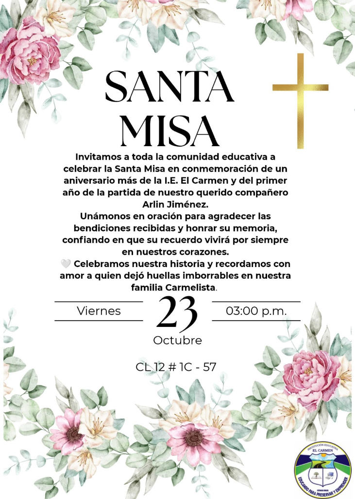

Día 5: Solemne Santa Misa de Acción de Gracias & 53° Aniversario
Con profundo júbilo y recogimiento espiritual celebramos el 53° Aniversario de fundación de nuestra querida Institución Educativa El Carmen de Ciénaga. Una jornada solemne de acción de gracias con la comunidad educativa reunida en torno al altar, bendición sacerdotal, honores patrios y el sentido homenaje póstumo a la memoria y legado de nuestro recordado maestro Arlin Jiménez.
53 Años Educando para Preservar y Emprender
Desde 1973, nuestra institución ha forjado generaciones de ciudadanos comprometidos con Ciénaga y el Magdalena. Esta Eucaristía reunió a directivos docentes, maestros, padres de familia, alumnos de todas las sedes y jóvenes de la Promoción 2026 en un solo corazón, dando gracias al Creador y a nuestra patrona, la Virgen del Carmen.

Tarjeta conmemorativa oficial de la Santa Misa
Videos Conmemorativos en YouTube
Revive la solemnidad de los actos protocolarios con el himno institucional y el video resumen que compila los momentos más memorables de la Semana Cultural Carmelista 2026.
📺 Cobertura Especial en Formato Panorámico (16:9)
2 Videos OficialesActos Protocolarios - Himno IE El Carmen
Solemne entonación del Himno de la IE El Carmen por parte de directivos, docentes y la comunidad estudiantil reunida en el marco del 53° Aniversario Institucional.
Resumen Semana Cultural IEEC 2026
Registro audiovisual con los momentos más emotivos y destacados de toda la Semana Cultural Carmelista 2026: ciencia, emprendimiento, comparsas folclóricas, deporte, foros y gran clausura.
Registro Fotográfico Destacado (12)
Haz clic o toca cualquier imagen para abrirla en pantalla completa con el visor interactivo y navegar entre las fotos.
.jpg) Altar Mayor & Misa · 1/12
Altar Mayor & Misa · 1/12
Apertura de la Santa Misa y Altar Conmemorativo
Solemne inicio de la Eucaristía de acción de gracias por los 53 años institucionales con el altar en honor a la Virgen del Carmen, ofrendas florales y la comunidad reunida en oración.
.jpg) Liturgia de la Palabra · 2/12
Liturgia de la Palabra · 2/12
Liturgia de la Palabra y Reflexión Sacerdotal
El párroco presidiendo la celebración eucarística y compartiendo un mensaje inspirador de fe, vocación, amor a la educación y gratitud por la historia carmelista.
.jpg) Estudiantes Carmelitas · 3/12
Estudiantes Carmelitas · 3/12
Comunidad Estudiantil Carmelista en Oración
Estudiantes luciendo el uniforme institucional de gala, participando con respeto, devoción y recogimiento espiritual en el patio central techado.
.jpg) Mural Árbol de Sueños · 4/12
Mural Árbol de Sueños · 4/12
Celebración Eucarística y Árbol de Sueños
Momento solemne de la Eucaristía frente al mural conmemorativo «Árbol de Sueños» con la participación activa y fraterna de directivos y docentes.
.jpg) Vista Panorámica · 5/12
Vista Panorámica · 5/12
Panorámica del Patio Central de la Sede Principal
Amplia concurrencia de la comunidad carmelista colmando los pasillos y áreas techadas durante los actos litúrgicos del aniversario.
.jpg) Promo 2026 & Familias · 6/12
Promo 2026 & Familias · 6/12
Acompañamiento de Familias y Promoción 2026
Padres de familia, acudientes y los jóvenes de la Promoción 2026 unidos en acción de gracias por las bendiciones cosechadas en estos 53 años.
.jpg) Directivas Docentes · 7/12
Directivas Docentes · 7/12
Mensaje Institucional del Cuerpo Directivo
Palabras de gratitud, exaltación histórica y compromiso institucional dirigidas por las directivas docentes a toda la familia carmelista.
.jpg) Lecturas & Plegarias · 8/12
Lecturas & Plegarias · 8/12
Lecturas Litúrgicas y Oración de los Fieles
Miembros de la comunidad educativa elevando súplicas y plegarias junto a la imagen protectora de la Virgen del Carmen en el altar.
.jpg) Muestra del Altar · 9/12
Muestra del Altar · 9/12
Altar Mayor: 53° Aniversario Institucional
Hermosa ambientación con arreglos florales, detalles marianos, coro e instrumentos y el mural conmemorativo «I.E. El Carmen Aniversario».
.jpg) Asamblea en Oración · 10/12
Asamblea en Oración · 10/12
Gran Asamblea Carmelista en la Eucaristía
Vista desde la nave central que refleja el fervor, unidad, hermandad y solemnidad de toda la institución educativa en Ciénaga.
.jpg) Homenaje a Arlin Jiménez · 11/12
Homenaje a Arlin Jiménez · 11/12
Homenaje al Legado del Profesor Arlin Jiménez
Sentido homenaje póstumo en el primer aniversario de la partida de nuestro querido compañero y educador Arlin Jiménez, honrando su memoria y entrega.
.jpg) Ritos Litúrgicos · 12/12
Ritos Litúrgicos · 12/12
Preparación Litúrgica y Sagrados Vasos
Disposición solemne de los ornamentos, vasos sagrados, cáliz y ofrendas para la consagración eucarística de aniversario.